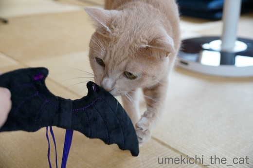
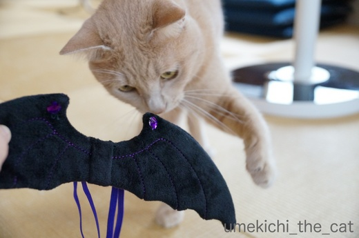
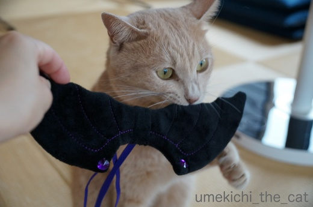
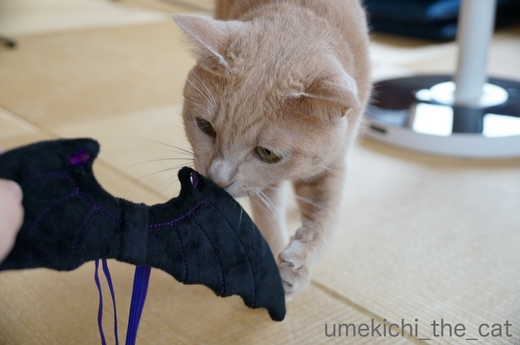
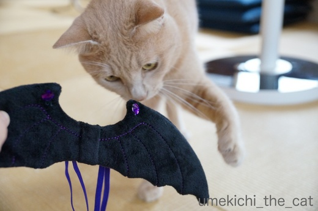
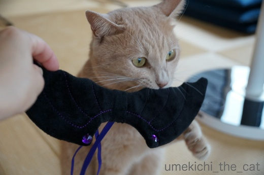

コウモリさんはいかがでしょう？ [梅吉]
ショップのディスプレイがハロウィン一色になってきましたね。
自分には無縁のイベントと思っていましたが梅吉を見るとうずうず・・・・・

なので買ってきちゃいました！コウモリさんの羽ですよー。
スリコ（３coinsをこう呼ぶらしい・・・お店の袋に書いてあったわw)でゲット。

![[猫]](https://blog.ss-blog.jp/_images_e/101.gif) ごあいさつの ねこぱんち いくでー
ごあいさつの ねこぱんち いくでー

てきいがあるんかいな？ がぶしてたしかめとこ
梅吉さん、コウモリさんの羽、付けてくれますか？
頭にのっければなんとかなる被り物ではなく
両腕にゴムを通して背負わせるタイプ。果たして協力していただけるのでしょうか。
ハロウィンの日、注目ですよ＾＾
先日からのフュージョン関係の記事に絡んで懐かしいレコードを
ごそごそと引っ張り出して来ました。
もちろん梅吉もすっとんで来ましたよ。
レコードプレーヤーが動いているの見るの初めてだったかしら・・・
やんちゃMaxのお子ちゃま時代だったらプラスチックのフタを突き破っていたかも(^▽^;)
 ↑ガブッと一押し↑
↑ガブッと一押し↑
自分には無縁のイベントと思っていましたが梅吉を見るとうずうず・・・・・

なので買ってきちゃいました！コウモリさんの羽ですよー。
スリコ（３coinsをこう呼ぶらしい・・・お店の袋に書いてあったわw)でゲット。


梅吉さん、コウモリさんの羽、付けてくれますか？
頭にのっければなんとかなる被り物ではなく
両腕にゴムを通して背負わせるタイプ。果たして協力していただけるのでしょうか。
ハロウィンの日、注目ですよ＾＾
先日からのフュージョン関係の記事に絡んで懐かしいレコードを
ごそごそと引っ張り出して来ました。
もちろん梅吉もすっとんで来ましたよ。
レコードプレーヤーが動いているの見るの初めてだったかしら・・・
やんちゃMaxのお子ちゃま時代だったらプラスチックのフタを突き破っていたかも(^▽^;)
2017-09-29 20:12
nice!(64)
コメント(25)

カフェオレ色の梅吉

梅吉 2023年8月10日 永眠


梅吉と出会った譲渡会

犬猫の理由なき殺処分ゼロ
妄想広告
UMEKICHI 光

爆発的に早い！
時々攻撃的！
Thanks to Mr.Boss365
爆発的に早い！
時々攻撃的！
Thanks to Mr.Boss365

梅吉さん、こうもりの味はいかがでした～？^^
両腕を通すタイプはハードル高そう・・・あ、ウチは絶対無理です(^▽^;)
ハロウィンの日を楽しみにしてます！
フュージョン、高中のほかにもスクゥエア、カシオペア、ナニワエキスプレス、シャカタクあたり、コンサート行きました♪
ターンテーブルの上にレコードじゃなくネズミのおもちゃ置いたら楽しいかも？！
by ゆきち (2017-09-29 20:42)
コウモリの羽は着けられたらカッコイイですよね。ハロウィンコスプレ楽しみです~。ターンテーブルをぺしぺしは猫のお約束ですが、久しぶりのレコード鑑賞だったのでしょうか。うちの子達はレコード見たことありません。
by zombiekong (2017-09-29 22:08)
梅吉さん、コウモリの羽は制覇しましたか♪( ´▽｀)
可愛いハロウィーンコスプレ楽しみ〜＾＾
うちは普段はほけほけオーラ満載の大御所だけど
被り物とかこういう身につける物は協力してくれないんですよねぇ(*_*)
もちろんかみさんが協力してくれないのが一番の原因だと思うけど・・・(⌒-⌒; )
by ニッキー (2017-09-29 22:43)
ハロウィンのコウモリ梅吉さん、期待しちゃいます～。^^;
レコードのレーベルはひょっとして黒猫ですか？
それに反応しているのでしょうか。^^;
by yes_hama (2017-09-29 22:56)
梅吉さんは、コウモリの羽で下僕さんの衣装は何？（笑）
プラスチックんのフタをトントンって、優しくトントンですね。
一緒に回ると目が回りますよ〜
by kiki (2017-09-29 23:16)
アハハ(≧▽≦)
レコードプレーヤーってネコ様のおもちゃに出来そう！
紐くっつけて45回転で再生します？(^^;
堀井克美とかもよく聴いてました。
レコードプレーヤーを処分した時、レコードも全部処分。
どうしても残しておきたい物はCDで買い直しました。
もったいないコトしたなぁ…。
ALONEはCDで残ってます。
by も〜 (2017-09-29 23:42)
レコードの回るのが気になってしかたない感じですね。
前足がかわいいですね
by みぃにゃん (2017-09-29 23:44)
この羽は難易度高そうですね＾＾；
by ぽちの輔 (2017-09-30 05:33)
梅吉さん！羽つけれましたか？？
その姿も楽しみですぅ～(*^_^*)
嫌がる梅吉さんのお顔も
楽しみではありますが(;^_^A
レコードが回っているのが
気になってるのですね！
興味津々で
足でちょいちょいする姿も可愛いですねぇ～♪
by きぃ (2017-09-30 06:29)
ほぅ、ハロウィンには、梅吉さんがコウモリに(^m^) 楽しみだわ♪
背中の羽をかじりたくて、レコードみたいにぐるぐる回っちゃうかも〜
by のらん (2017-09-30 07:57)
梅吉さん、ターンテーブルが不思議そうですね！
おててが可愛い(^ ^)
by ma2ma2 (2017-09-30 11:02)
わー、何か秋の空気になったら梅吉しゃまの艶色が一層、繊細になったようで・・・無邪気な様子とのギャップがアートですわ♪
by Ginger (2017-09-30 13:25)
コウモリさん、バシッガブッといきましたね。
果たして付けてくれるでしょうか～～？
楽しみ＾＾
ターンテーブル不思議そうにとんとんするの、可愛い～～＾＾
by sana (2017-09-30 15:47)
羽をつけた梅吉さん
見られるかな~？
みてみたいな。
ターンテーブル、興味津々おててがかわいい。
by ふにゃいの (2017-09-30 22:21)
うめ吉さん![[黒ハート]](https://blog.ss-blog.jp/_images_e/136.gif)
ターンテーブルに手♪
可愛い
コウモリ
40ほど前 千里の団地に住んでた時
コウモリが窓から入ってきて
びっくり！
ゴム手袋はめて捕まえると
顔はネズミみたいで可愛くて
羽は大きく広がりました。
窓から逃がしてやりましたけど
コウモリを見たのはその時だけでした。
by ヨッシー (2017-09-30 22:33)
コウモリさんの羽はワンコ用でしょうか？
カラスミ色・・・じゃなくてカフェオレ色の梅吉さんに似合いそうですね(*´▽｀*)
果たして、装着してくれるのでしょうか！？
おお、立派なプレーヤーですね！
MC型でしょうか？それともMM型でしょうか？
ワタシも学生の頃オーディオに凝ってて、フュージョンとか聞いてましたよ～
梅吉さん、ソフトタッチなところが偉い！
レコードは繊細なんだって良く分かってらっしゃる(*^^*)
by ひでぷに (2017-10-01 00:25)
梅吉さんのハロウィン楽しみです～ヽ(^o^)丿
無事、背負ってくれるかな？わくわく＾＾
レコードプレーヤー、健在ですね♪
うちは亡父のが実家にあるので、
無性に懐かしくなりました＾＾
クルクル回るから、梅吉さん楽しいですね＾＾
by マーヤ (2017-10-01 01:09)
コウモリの羽、どうなっちゃうんだろう。
楽しみだよ～♪
くるくる回るレコードについつい手を出しちゃう梅吉くんが
かわゆすぎてたまらんですっ(#^^#)
by emi (2017-10-01 16:28)
わたしもつい最近知りました^^;→「スリコ」・・・
家の近所にもあって、わたしは別の被り物を買いました。
（小型犬用なんだろうな、ちょっと大きめです^^;）
コウモリの羽もかわいいですね！かわいい！ほっしーい♪
ハロウィンでのお披露目、楽しみです^^
我が家でも前の家のとき、夏に玄関を開けていたら
夜、目の前の森からコウモリさん入ってきたらしいです。
先先代のニャンコはビビったそうな。（自身で出て行ったそうです）
by Ja-Kou66 (2017-10-01 18:31)
ゆきちさん＞梅吉は上手くタイミングを掴むとコスプレOKなので
ハロウィンの日、ご期待くださいませ♪
オサレ系フュージョンバンドを制覇されていますね！！
ナニワエクスプレス(*>艸<)
2013年「夢の乱入者」復活ライブに行ったのですが
清水興さんが客席に降りてきてノリの悪い客をシバイてました (^▽^;)
zombiekongさん＞背負せるタイプは位置を調節するのも難しい・・・
コウモリらしく見えるかが課題です(⌒_⌒;
レコードプレーヤーには期待通りの反応をしてくれましたよ♪
レコードは本体よりもレコードのカサカサする袋にロックオンでした！
そして一枚進呈しました・・・
ニッキーさん＞ゴッドマザー様は「ありのままがよい」方なのですね〜。
そんな方だからこそ４にゃんさんの信頼も厚いのですね＾＾
梅吉は「おかーさんはすっきやけど なにするかわからへん ようじんや」
と思っているかもしれません (⌒_⌒;
yes_hamaさん＞ハロウィンのコスプレ番長はアズ氏ですよ〜(^_－)☆
クロネコさん、それだけで絵になっちゃいますから！
レコードは御察しの通りキティ・レコード時代の高中さんのアルバムです。
梅吉は「なんやー このにゃんこはー」と遊びたかったのかもですね＾＾
kikiさん＞下僕は・・・（素で）魔女！？
美を付けたいところですがそれはなかなか難しい様で(*>艸<)
梅吉はレコードを見ながら頭もちょっとぐるぐる。
目が回ると思ったのか途中でやめていましたよー＾＾
も〜さん＞猫の爪研ぎでスクラッチターンテーブルってありましたよねー。
レコードの代わりにダンボールなんてのせたら
リアルスクラッチターンテーブルになるのかな(≧▽≦)
我が家に高中さんのレコードは５枚ありました。ALONEもあったよ！
他のアルバムはお金のない学生時代のことなので
レンタルレコードを借りてテープにダビング。
懐かしい時代のお話です＾＾
みぃにゃんさん＞もっと突撃されるかと思ったのですが
意外にも可愛くトントン。
動画を撮っていたのを意識していたのかもw
ぽちの輔さん＞現在攻略法を考えています。寝起きかなぁ・・・
きぃさん＞少しでも「らしく」見える写真を撮りたいのですが
モデルさん次第なのでなかなか難しいのです(⌒_⌒;
なんちゃって写真になるかもしれませんがご期待くださいませ♪
レコードをちょいちょい、
期待どうりのリアクションで嬉しい飼い主でした(≧▽≦)
のらんさん＞あはは(≧▽≦)回転運動が得意になるかもですね！
ぐるぐるまわる・・・と聞くとバターになると思ってしまうのは
ある年代からの特徴でしょうか・・・(*>艸<)
ma2ma2さん＞梅吉が我が家に来てからレコードをかけるのは
初めてだったのかなぁ・・・
でも興味を持ってくれて面白かったです＾＾
Gingerさん＞深まりつつある秋に色味もコックリと増したのかもしれません。
冬毛になりつつある・・・？
２ちゃいになってもまだまだ無邪気でお子ちゃまな梅吉でーす(^_－)☆
sanaさん＞我が家で初めて見るものは「バシッガブッ」としなければ
気が済まないようです (⌒_⌒;
ターンテーブルが回るのを見るのは初めてだったのか定かではないのですが
いつも自分がベッドにしているモノがまさか回るとは思っていなかったと思います！
一生懸命見つめている時の後頭部って特別可愛いですよねーＯ(≧▽≦)Ｏ
ふにゃいのさん＞実はすでに撮影済みなんです(๑˃̵ᴗ˂̵)و
ただクオリティを追求しようとするとなかなか難しくて・・・
が、コスプレ姿はお見せできるのは間違いないので
見にきていただけると嬉しいでーす＾＾
ターンテーブルに興味津々なおててはにぎにぎしたい衝動にかられましたが
動画撮影中につき我慢しましたー！
ヨッシーさん＞コウモリを！？ゴム手で捕獲！？
コウモリは素早く飛び回りそうですがそれを捕まえたヨッシーさんの
運動神経に脱帽なんですけどー！！
やっぱりコウモリって府内にもいるんですね。
夕暮れ時にスズメでもツバメでもない飛び方をする小さなイキモノが
飛んでいるのでもしかして・・・と思っていました。
我が家の周りは古〜い神社仏閣が多いのでそのあたりの大きな木や
軒下で暮らしているのかな？
あまり遭遇したくない御仁ですが・・・
ひでぷにさん＞ワンコにつけるとしたら超小型犬でしょうか。
おそらく猫飼いをターゲットにした商品と思われます。狙われました〜^^;
MC・・・？MM？？おっとに聞きましたよ。
「フォノイコがMC型に対応していないので、MM型
（正確にはオーディオテクニカのVM型）を使っています。」
との事でした。なんの暗号のやりとりかしら・・・
このプレーヤーはおっとが学生時代に買ったもの。
この頃遊びで得た知識や情報＆物って「肥やし」となって
今の生活に生きていますよね！
マーヤさん＞アナログ製品、自分である程度の修理もできるし
デジタル製品よりも長持ちする気がします。
にゃんこにも楽しんでもらうこともできるし(*>艸<)
ハロウィンコスプレお楽しみに〜♪
私はマーヤさんの刺しゅうの出来上がりが楽しみです！！
emiさん＞コウモリの羽、実はちゃんと背負えました（ﾅｲｼｮ。。）
ただコウモリに見えるかは疑問が残るところで・・・^^;
ただ、可愛さは保証しますよ(^_－)☆
レコードは梅吉がすごい勢いでアタックして
針飛びするんじゃないかと思いましたが大丈夫でした〜。
梅吉も大人になったのかな・・・( ；∀；)
Ja-Kou66さん＞「スリコ」。
多分結構前から袋に書いてあったのかもしれませんよねー。
今更なにを・・・って思っている方もいるかも^^;
コウモリの羽は人気なのか私はラス１をゲットしました。
そのあと見かけていないので売り切りなのかただいま量産中なのか・・・
コウモリが家の中に！！見たことのない生物はにゃんこもビビりますよね。
勝手に出て行っていただけてよかったです＾＾
by ちぃ (2017-10-01 19:48)
いいなーいいなー
このコウモリさんの羽、欲しくてお店に走ったのですが
すでに売り切れていてGET出来なかったの。
3件くらいまわったんだけど、全部アウト(笑)
みんな買うの早いよーって思った！
梅吉君のコスプレ楽しみにしてるよ！！^^
レコードプレーヤーあるなんて凄い！
by リュカ (2017-10-02 10:18)
プレイヤーのケース、チョイチョイしてますね～(^^
一緒にグルグルと目が回らなくって、良かったｗ
レコードの真ん中部分、ネコのイラストに見えるのは私だけ？♪
そして、梅吉さんのコウモリさん、ぜひ見たいっ！！
スリコっていうんだ。し、知らなかった(^_^;)
by morichan (2017-10-02 12:37)
ハロウィンの日に梅吉くんのコウモリお披露目ですか？楽しみですね。
あ～コウモリの羽私も欲しくなってきました(*^。^*)
by palpal (2017-10-02 14:27)
リュカさん＞コウモリさん、いいでしょー(≧▽≦)
私がGETしたのはラスいちでした。
そのあと見かけていないので今量産中かな？
ハロウィンまではまだ一月近くあるしまだチャンスはあるはず！
レコードプレーヤーはおっとのものですが私のは実家にあります。。
でかいステレオだし両親には使いこなせないので盆栽状態。
テレビ台になってますw
morichanさん＞レコードはかるーく目で追って頭をぐるぐるしてましたがすぐに止めました^^;
「なんや きしょくわるなりそうや」と思ったのかもしれませんw
morichanさん動体視力が凄いわー！
確かにレコードの真ん中、クロネコの寝そべった絵が書いていあります。
あ、クロネコだから余計に反応されましたか＾＾
今はもうないのですがキティ・レコードというレーベルのマークだったんですよ。
私には筆でひと刷毛・・にしか見えませんでした^^;
コウモリさんはご期待くださいませ(^_－)☆
palpalさん＞そうなのー！
実は写真は撮れたのですがハロウィンの日まで出し惜しみ＾＾
もう少しクオリティを追求したい気もあり。梅吉次第なんですけどねw
コウモリの羽、ナノくんが最高に似合いそうじゃないですか！！
付けても「はぁー。。」って諦めてくれそうだしクロネコさんだしＯ(≧▽≦)Ｏ
きなこちゃんに「なにしてんねん」って襲われちゃうかな。。。
by ちぃ (2017-10-02 15:59)
沒有醫生的處方
cialis arginine interactio http://kawanboni.com/ Cialis 5 mg
by Cialis 5 mg (2018-04-14 06:19)